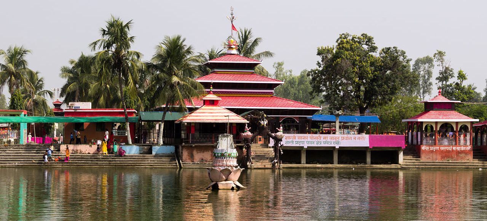

Province:2 (Madhesh Pradesh)
.jpg)
The beauty and the known places of Province 2:
The newly-carved out Province 2 under the federal system is one of the seven provinces in the country. It has 8 districts spreading from Parsa National Park ,covering the major trade hub of the country Birgunj,to the birth place of Lord Sita,Janaki Temple in Janakpur and a sacred hindu temple Chinnamasta Bhagwati in Saptari.
Madhesh Province covers 8 district of terai region,terai region which is also known as the bread-basket of Nepal.Province 2 is a centre for religious and cultural tourism.
Madhesh Province is a province in southeastern Terai region of Nepal.It has an area of 9,661 km2 (3,730 sq mi) covering about 6.5% of the country's total area. It has a population of 6,126,288 as per the 2021 Nepal census, making it Nepal's most densely populated province and smallest province by area.
How to reach Province 2:
You can take a direct flight to Province 2 from the capital.It consists of 3 airports,Janakpur Airport ,Simara Airport and Rajbiraj Airport .Since, province 2 only covers terai region travelling by road is also an good option.
Major Attractions of Province 2:
1. Janaki Temple:
.jpg)
The Janaki Temple, also known as Janakpur Dham, is a famous Hindu temple located in Janakpur, Nepal. It is dedicated to Goddess Sita, the wife of Lord Rama. The temple is an important pilgrimage site for Hindus and attracts devotees from all over the world. The architecture of the temple is stunning, with intricate carvings and beautiful artwork. It is believed to be the birthplace of Goddess Sita and holds great religious and cultural significance.
Best time to travel:
During the months of October to February when the weather is pleasant and cool. It is also recommended to avoid the summer months of April to June as they can be quite hot.
How to reach:
To reach Janaki Temple in Janakpur, you can take a flight from Kathmandu to Janakpur Airport. Alternatively, you can also take a bus or hire a car for a scenic road trip.
Janaki Temple is approximately 20 minutes away from Janakpur Airport by car.
2. Parsa National Park:
Parsa National Park is located in the Parsa district of Nepal.It is known for its rich biodiversity and stunning natural landscapes. It covers an area of approximately 637 square kilometers and is home to a wide variety of flora and fauna & various wildlife species, including tigers, elephants, leopards, and many more. The park is known for its dense forests, grasslands, and riverine habitats. It is a protected area that aims to conserve the natural biodiversity of the region. Visitors can enjoy activities such as wildlife safaris, bird watching, and nature walks to explore the park's natural beauty.
Best time to travel:
The best time to visit Parsa National Park is during the dry season, which is from October to April. During this time, the weather is pleasant, and the park is more accessible for wildlife sightings and outdoor activities. Keep in mind that it can get quite hot in April, so early mornings and late afternoons are ideal for exploring the park.
How to reach:
From Kathmandu you can hire a taxi or take a bus to Parsa National Park, which is approximately a 5-6 hour drive. OR
You can take a flight from TIA,Kathmandu to Simara which only takes 15min.From Simara you can take a taxi or a local bus. The park is approximately 35 kilometers away from Simara, and the journey takes around 1-2 hours depending on the mode of transportation and traffic conditions.
3. Gadhimai Temple:
The Gadhimai Temple is a Hindu temple located in Bariyarpur, Nepal. It is dedicated to the goddess Gadhimai, who is believed to be an incarnation of the Hindu goddess Durga and is worshipped by devotees seeking blessings and fulfillment of their desires. The temple is famous for the Gadhimai Mela, a large religious festival held every five years, where thousands of animals are sacrificed as an offering to the goddess. The temple attracts devotees from Nepal and India who come to seek blessings and participate in the festival.
Best time to travel:
The best time to visit the Gadhimai Temple is during the Gadhimai Mela, which is held every five years.
How to reach:
To reach the Gadhimai Temple, you can take a bus or hire a taxi from Kathmandu, Province No. 3, Nepal. The temple is located in Bariyarpur, which is approximately 150 kilometers away from Kathmandu. It's a scenic journey that takes around 4-5 hours by road.
4. Chinnamasta Bhagwati Temple:

The Chinnamasta Bhagwati Temple, located in Saptari District, Nepal, is a sacred Hindu temple dedicated to the goddess Chinnamasta, who is depicted as a self-decapitated goddess holding her own severed head in her hand.The temple is known for its unique architecture and spiritual significance. Devotees visit the temple to seek blessings and offer prayers to the goddess. The temple complex also includes other shrines dedicated to various Hindu deities. It is a place of tranquility and devotion, attracting pilgrims from near and far.
Best time to travel:
The best time to visit the Chinnamasta Bhagwati Temple is during the Chinnamasta Jatra, which is a major festival celebrated annually in the temple premises. It usually falls in the month of October or November.It's a vibrant and auspicious time to visit the temple.
How to reach:
To reach the Chinnamasta Bhagwati Temple, you can take a bus or hire a taxi from Kathmandu, Province No. 3, Nepal. The temple is located in Saptari District, which is approximately 250 kilometers away from Kathmandu. The journey takes around 7-8 hours by road.
.jpg)